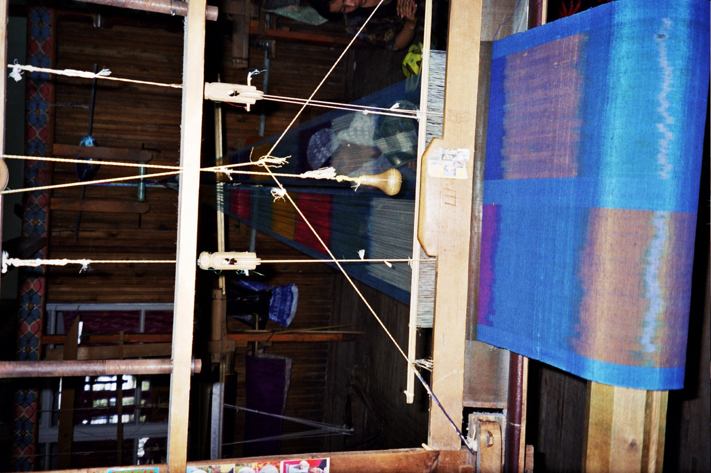

Oʻzbekistonda 9 oyda kambagʻallik 5,8 foizdan 3,6 foizgacha kamaydi — Bandlik vazirligi
Bandlik va kambagʻallikni qisqartirish vazirligining 2026-yil 9 oylik natijalariga koʻra, kambagʻallik darajasi 5,8 foizdan 3,6 foizgacha tushdi, 824 ming kishi doimiy ishga joylashtirildi.

Oʻzbekiston Bandlik va kambagʻallikni qisqartirish vazirligi 2026-yilning yanvar–sentabr (9 oy) davriga oid natijalarini eʼlon qildi. Maʼlumotlarga koʻra, mamlakatda kambagʻallik darajasi 5,8 foizdan 3,6 foizgacha kamaydi.
Bandlik
Vazirlik maʼlumotiga koʻra, 9 oy davomida 824 000 fuqaro doimiy ish bilan taʼminlandi. Shuningdek, 980 000 norasmiy ish oʻrni rasmiylashtirildi — yaʼni ilgari yashirin boʻlgan ish joylari rasmiy bandlikka oʻtkazildi.
Daromad yordami va reyestr
4,1 million kishi turli koʻrinishdagi daromad yordamini oldi. 440 000 oila ahvoli yaxshilangani sababli ijtimoiy reyestrdan chiqarildi. Kambagʻallik yoʻq deb eʼtirof etilgan mahallalar soni 1 435 tadan 3 627 taga oshdi.

Subsidiya va kreditlar
«Onlayn mahalla» platformasi orqali 7 730 ta subsidiya arizasi maʼqullanib, 64,1 mlrd soʻm ajratildi (oʻtgan yilga nisbatan 58,4 foizga koʻp). 8 835 ta kredit arizasi boʻyicha 79,8 mlrd soʻm imtiyozli kredit berildi (31,4 foizga koʻp).
Kasbga tayyorlash
Kasb-hunarga oʻqitish dasturlariga 96 400 kishi jalb etilib, 59 200 nafari oʻqishni tugatdi; ulardan qariyb 45 000 nafari ishga joylashdi. Vaucher tizimi orqali 130 000 kishi vaucher oldi, 56 500 nafari kursni tugatdi, 43 000 dan ortigʻi ish bilan taʼminlandi.
Kontekst
Jahon banki shu yil sentabrda eʼlon qilgan hisobotga koʻra, 2021–2025 yillarda Oʻzbekistonda kambagʻallik darajasi 17 foizdan 5,8 foizgacha tushgan edi. Vazirlikning yangi 9 oylik koʻrsatkichi — 3,6 foiz — bu tendensiyaning davomi sifatida eʼlon qilindi.